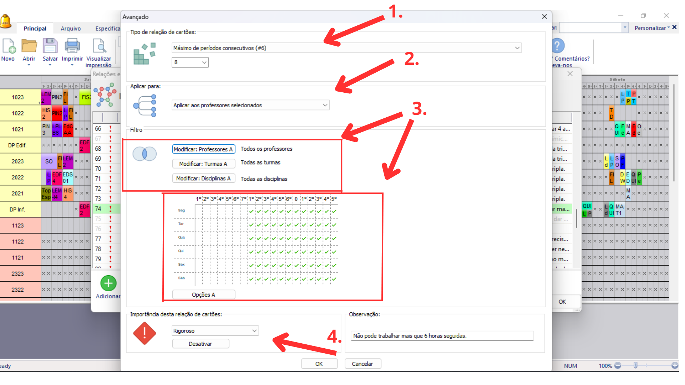

Detalhes do post:
Limite de 6 Horas Consecutivas de Trabalho com Intervalo Obrigatório:
Descrição:Nenhum docente pode ter mais de 6 horas de trabalho consecutivo sem um intervalo de uma hora ininterrupta pelo menos
Para resolver esse tipo de situação devemos restringir a colocação dos cartões das aulas usando as relações entre cartões avançados
1- Selecione o tipo de restrição “Máximo de períodos consecutivos (#6)”, na caixa de texto logo abaixo deve se informar a quantidade de períodos que podem se suceder consecutivamente, nota-se que se deve considerar o tempo de cada período para sua instituição. Considerando neste caso cada período com 45 minutos, 8 períodos são 6 horas o período máximo que os professores podem lecionar sem ao menos um intervalo de uma hora.
2- Selecione a opção “Aplicar aos professores selecionados”, visto que a restrição deve atingir apenas os docentes.
3- Utilize o filtro “Modificar Professores” selecionando todos professores, considerando que todos os docentes devem ser atingidos por essa restrição, o mesmo se aplica aos filtros de turma e disciplina.
Selecionar no quadro de horários os horários logo após o horário de almoço, levando em consideração que os horários da manhã tem o total de 4h45min (07h às 11h45min), não sendo necessário que a restrição atinja esse turno, pois logo após os horários da manhã têm o intervalo de almoço.
4- Selecione a importância da Restrição como sendo “RIGOROSO”, pois se trata de uma lei e deve ser atendida em todas as situações.
Também escreva uma observação que facilite a identificação da restrição e explique seu objetivo.
Clique em “ok” no canto inferior para salvar a relação.